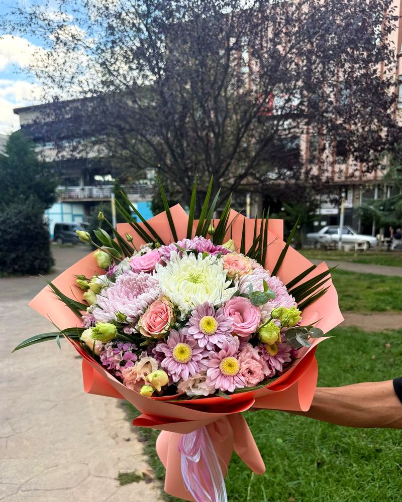

Her buket için
Kesme çiçek buketi
- Su
- 1-2 günde bir değiştir
- Işık
- Serin, aydınlık, direkt güneş yok
- Ömrü
- 5-10 gün
- Vazoyu sabun ve suyla iyice yıka. Kirli vazodaki bakteriler sapları tıkar, çiçek su içemez.
- Vazoyu oda sıcaklığında, temiz suyla doldur. Buketle gelen çiçek besini varsa suya kat.
- Sapları keskin bir bıçakla 2-3 cm, çapraz (45°) kes. Makas sapı ezer, bıçak daha iyidir.
- Suyun altında kalacak yaprakları temizle. Suda çürüyüp suyu bozarlar.
- Suyu 1-2 günde bir değiştir, her seferinde saplardan 1 cm daha kes.
İpucuGeceleri buketi serin bir odaya almak ömrünü birkaç gün uzatır.
DikkatMeyve kasesinin yanına koyma. Olgunlaşan meyveler, özellikle muz ve elma, çiçeklerin çabuk solmasına yol açan bir gaz salar. Kalorifer, soba ve klimadan da uzak tut.